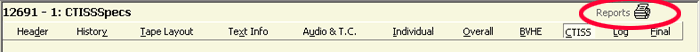
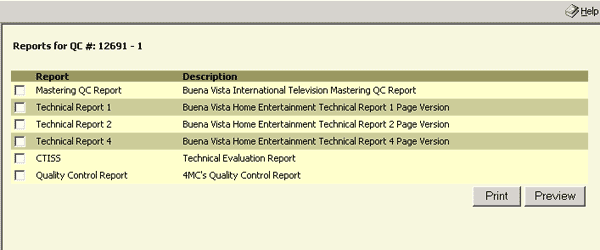

When the data you require has been entered and saved reports can be printed depending on the user's choice. To print reports from any of the following input screens click on the PRINTER ICON (example 1A. circled in red) in the upper right. The screens include HEADER, HISTORY, TAPE LAYOUT, TEXT INFO, AUDIO & T.C., INDIVIDUAL SPECS, OVERALL SPECS, BVHE SPECS, CTISS SPECS, LOG and FINAL.
1A.
The next screen to come up will be the Reports Screen like in example 1B.
1B.
Reports that you can print or preview are Mastering QC Report, Technical Report 1, Technical Report 2, Technical Report 4, CTISS and Quality Control Report. To preview a report check the checkbox next to that report and press the PREVIEW button. If you would like to print a report check the checkbox next to that report and click the PRINT button.
If you would like to make PDFs you will need to have the PDF WRITER installed on your machine (please have your system administrator do this for you). Once you have it installed you can proceed to create a PDF File.
| 1. | Go to print preview by clicking the PREVIEW button. | |
| 2. | Choose PRINT from the FILE menu. | |
| 3. | select PDF WRITER | |
| 4. | then you can print it to a file |